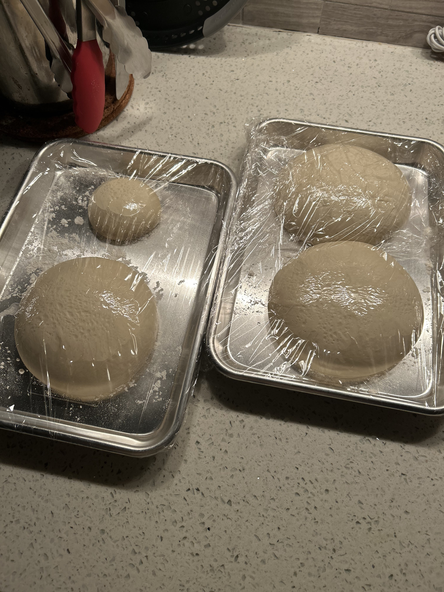

Pizza Dough

Description
The perfect fermented pizza dough.
Ready in as little as 6 hours, but fermented up to 3 days in the fridge. The key to this recipe is developing the flavour of the dough through the pre-fermentation process.
Enjoy!
Ingredients
Makes 3 250g balls of dough
500g - Tipo 00 Flour
2.3g - Dry Active Yeast
1g - Honey
13g - Salt
440g - Water
23g - Olive Oil
The Pre-Ferment
- Warm water to 140 degrees farenheight
- Combine water and yeast, allow to bloom
- Mix flour until incorporated
- Autolyse for 15 minutes and mix once more to remove any lumps
- Let rest min 1 hour at room temperature or up to overnight in the fridge
The Bulk Ferment
- Add oil, salt, and remaining 60g of flour
- Mix and allow to autolyse for 15 minutes
- Return to dough and mix until gluten and smooth surface is developed
- Let rest until doubled in size
- Return and divide in to 250g dough balls
- Let rest 3-6 hours depending on heat and humidity